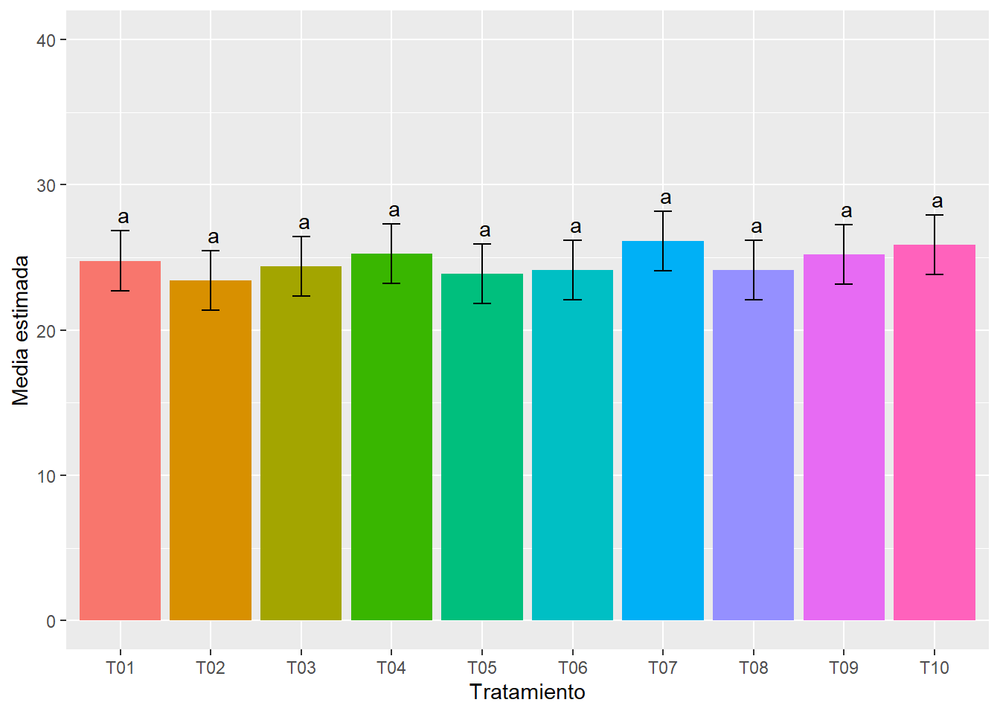

Efecto de tres bioestimulantes en el rendimiento de arroz soca (oryza sativa l.) en secano favorecido en el Fundo Agricola I de la UNAS – Tingo Maria
Cargar paquetes
library(tidyverse)
── Attaching core tidyverse packages ──────────────────────── tidyverse 2.0.0 ──
✔ dplyr 1.1.4 ✔ readr 2.1.5
✔ forcats 1.0.1 ✔ stringr 1.5.2
✔ ggplot2 4.0.0 ✔ tibble 3.3.0
✔ lubridate 1.9.4 ✔ tidyr 1.3.1
✔ purrr 1.1.0
── Conflicts ────────────────────────────────────────── tidyverse_conflicts() ──
✖ dplyr::filter() masks stats::filter()
✖ dplyr::lag() masks stats::lag()
ℹ Use the conflicted package (<http://conflicted.r-lib.org/>) to force all conflicts to become errors
library(googlesheets4)library(emmeans)
Welcome to emmeans.
Caution: You lose important information if you filter this package's results.
See '? untidy'
library(multcomp)
Cargando paquete requerido: mvtnorm
Cargando paquete requerido: survival
Cargando paquete requerido: TH.data
Cargando paquete requerido: MASS
Adjuntando el paquete: 'MASS'
The following object is masked from 'package:dplyr':
select
Adjuntando el paquete: 'TH.data'
The following object is masked from 'package:MASS':
geyser
Analysis of Variance Table
Response: tp
Df Sum Sq Mean Sq F value Pr(>F)
trt 9 28.159 3.1287 0.7822 0.63433
bloque 3 32.093 10.6976 2.6746 0.06726 .
Residuals 27 107.993 3.9998
---
Signif. codes: 0 '***' 0.001 '**' 0.01 '*' 0.05 '.' 0.1 ' ' 1
em <-emmeans(md, "trt") %>%cld(., Letters = letters)em
trt emmean SE df lower.CL upper.CL .group
T02 23.4 1 27 21.4 25.5 a
T05 23.9 1 27 21.8 25.9 a
T06 24.1 1 27 22.1 26.2 a
T08 24.1 1 27 22.1 26.2 a
T03 24.4 1 27 22.3 26.4 a
T01 24.8 1 27 22.7 26.8 a
T09 25.2 1 27 23.2 27.3 a
T04 25.3 1 27 23.2 27.3 a
T10 25.9 1 27 23.8 27.9 a
T07 26.1 1 27 24.1 28.2 a
Results are averaged over the levels of: bloque
Confidence level used: 0.95
P value adjustment: tukey method for comparing a family of 10 estimates
significance level used: alpha = 0.05
NOTE: If two or more means share the same grouping symbol,
then we cannot show them to be different.
But we also did not show them to be the same.
ggplot(em, aes(x = trt, y = emmean, fill = trt)) +geom_col() +geom_errorbar(aes(ymin = lower.CL, ymax = upper.CL), width =0.2) +geom_text(aes(label = .group, y = upper.CL), vjust =-0.5) +labs(x ="Tratamiento", y ="Media estimada") +ylim(0, 40) +guides(fill ="none")

Area foliar
md <-aov(af ~ trt + bloque, data = fb)anova(md)
Analysis of Variance Table
Response: af
Df Sum Sq Mean Sq F value Pr(>F)
trt 9 0.13985 0.015539 0.6153 0.7733
bloque 3 0.09689 0.032297 1.2790 0.3015
Residuals 27 0.68181 0.025252
em <-emmeans(md, "trt") %>%cld(., Letters = letters)em
trt emmean SE df lower.CL upper.CL .group
T05 1.08 0.0795 27 0.919 1.25 a
T01 1.08 0.0795 27 0.919 1.25 a
T10 1.09 0.0795 27 0.924 1.25 a
T04 1.09 0.0795 27 0.932 1.26 a
T07 1.14 0.0795 27 0.977 1.30 a
T09 1.18 0.0795 27 1.017 1.34 a
T03 1.20 0.0795 27 1.032 1.36 a
T06 1.21 0.0795 27 1.042 1.37 a
T02 1.21 0.0795 27 1.049 1.38 a
T08 1.25 0.0795 27 1.082 1.41 a
Results are averaged over the levels of: bloque
Confidence level used: 0.95
P value adjustment: tukey method for comparing a family of 10 estimates
significance level used: alpha = 0.05
NOTE: If two or more means share the same grouping symbol,
then we cannot show them to be different.
But we also did not show them to be the same.
ggplot(em, aes(x = trt, y = emmean, fill = trt)) +geom_col() +geom_errorbar(aes(ymin = lower.CL, ymax = upper.CL), width =0.2) +geom_text(aes(label = .group, y = upper.CL), vjust =-0.5) +labs(x ="Tratamiento", y ="Media estimada") +ylim(0, 2) +guides(fill ="none")